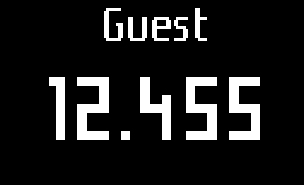

| 5/5 | Votre Pèse-enfant intelligent reconnaît automatiquement le bébé ou enfant pesé grâce à au dernier poids connu. Si la reconnaissance échoue, la balance affiche la mention "Guest" à la fin la pesée.  Dans ce cas, la mesure appaîtra dans la section "Mesures inconnues" de l'application Baby Companion. Pour assurer une bonne reconnaissance lors des prochaines pesées, procédez à l'assignation manuelle de la mesure en visitant la section "Mesure inconnues" se trouvant dans le menu principal de l'application. Nous espérons que vous apprécierez votre Pèse-enfant intelligent. Si vous avez des questions sur l'utilisation de votre produit ou rencontrez des problèmes, visitez notre site d'assistance à l'adresse http://support.withings.com |